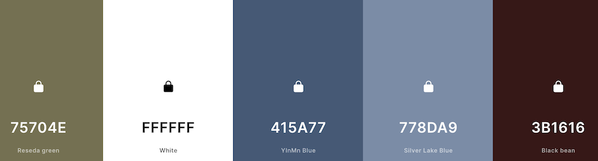

Site Name: Syracuse City Chamber of Commerce
This title represents the chamber of commerce for the city of Syracuse Utah
Site Purpose:
The primary mission of this chamber of commerce website is to display and inform about the growth of the community. It is dedicated to showcasing the unique charm and opportunities that the area has to offer.
Scenarios:
What current events are happening in the community? What services are available to city residents? When are upcoming meetings?
Color Schema:
Typography:
Google Fonts - Quicksand. This font will be used for the entirety of the website for a cohesive look.